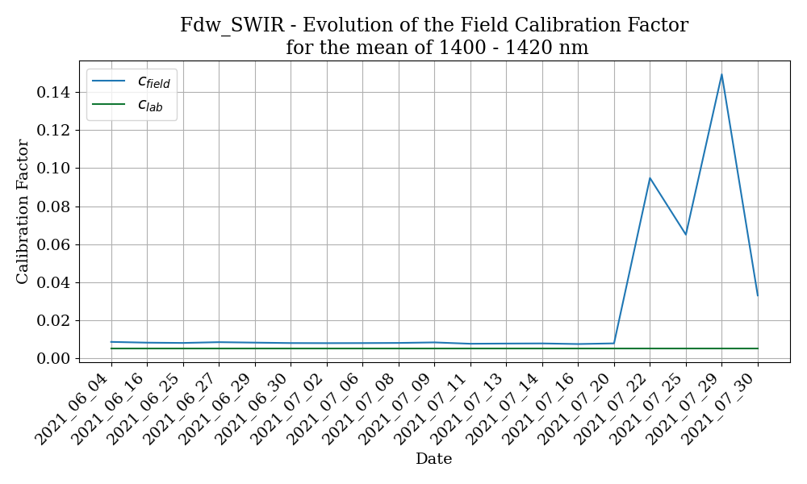
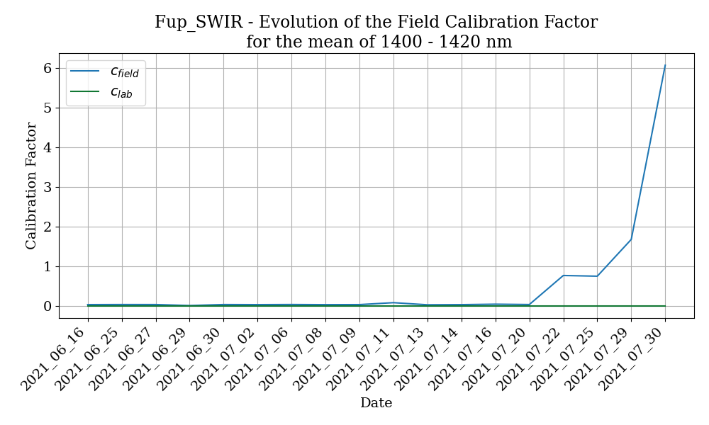
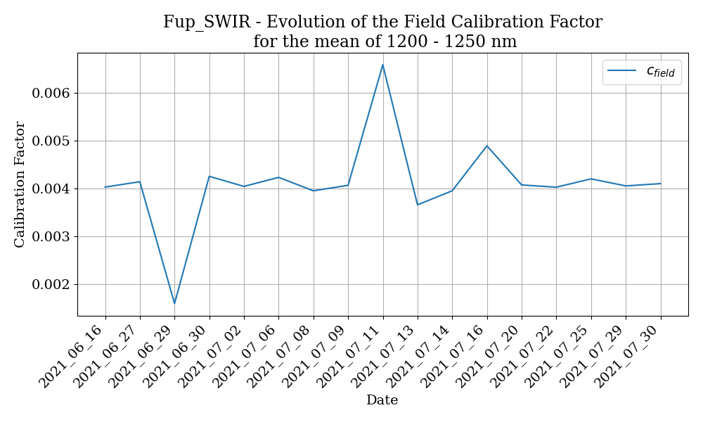
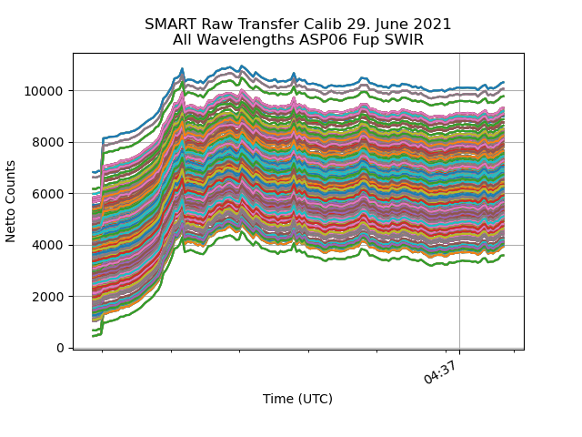
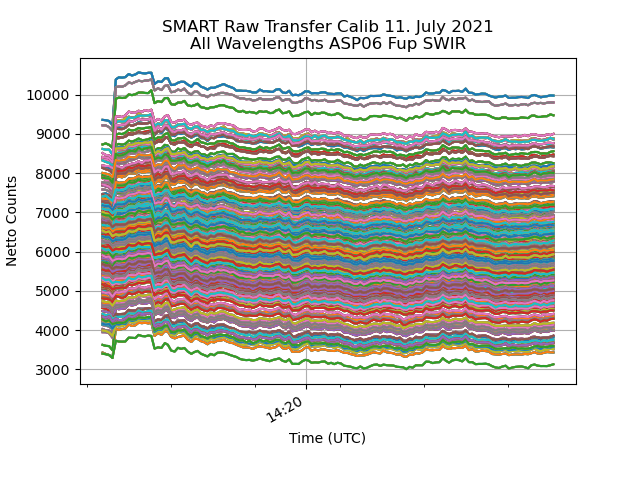
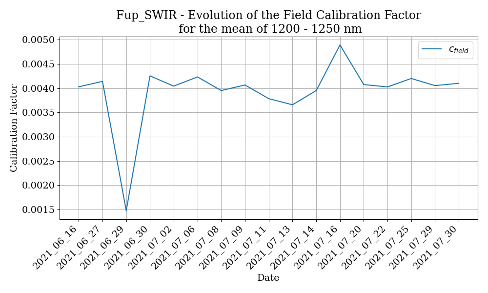

Processing
With data processing one usually refers to the process of converting the raw measurement files as delivered by the instrument PC into error/bias corrected, calibrated and distributable/publishable files. For this work the netCDF standard is defined as the preferred output format.
Each instrument has different requirements before, after and during the campaign. In general these scripts are not meant for analysing the data to answer specific science questions or for producing quicklooks. This is handled by the scripts in the folders Analysis and Quicklooks.
SMART
SMART has to be calibrated in the lab and in the field so there are processing routines for both cases. Some scripts are designated for postprocessing specific campaign data as sometimes the normal processing does not cover all possible cases which occur during a campaign.
Folder Structure
SMART data is organized by flight. Each flight folder has one SMART folder with the following subfolders:
data_calibrated: dark current corrected and calibrated measurement files
data_cor: dark current corrected measurement files
raw: raw measurement files
Each campaign also has a calibration folder. In the calibration folder each calibration is saved in its own folder. Each calibration is used to generate one calibration file, which is corrected for dark current and saved in the top level calibration folder.
A few more folders needed are:
raw_only: raw measurement files as written by ASP06/07, do not work on those files, but copy them into raw
lamp_F1587: calibration lamp file
panel_34816: reflectance panel file
pixel_wl: pixel to wavelength files for each spectrometer
Workflow
There are two workflows: 1. Calibration files 2. Measurement files
Both workflows start with the correction of the dark current. After the raw files are copied from ASP06/07 into raw_only and raw the minutely files are corrected for the dark current and saved with the new ending *_cor.dat in data_cor. Then the minutely files are merged to one file per folder and channel.
Calibration files
Use smart_process_transfer_calib.py or smart_process_lab_calib.py to correct the calibration files for the dark current and merge the minutely files.
Then run smart_calib_lab_ASP06/07.py for the lab calibrations or smart_calib_transfer.py for the transfer calibration.
Each script returns a file in the calib folder with the calibration factors.
Measurement files
Use smart_write_dark_currented_corrected_file.py to correct one flight for the dark current.
Merge the resulting minutely files with smart_merge_minutely_files.py.
Finally, calibrate the measurement with smart_calibrate_measurment.py.
The resulting calibrated files are saved in the data_calibrated folder.
As a final step the calibrated files can then be converted to netCDF with smart_write_ncfile.py.
smart_calib_lab_ASP06.py
Script to read in calibration files and calculate calibration factors for lab calibration of ASP06
read in 1000W lamp file, plot it and save to data file
set channel to work with
set which folder pair to work with
read in calibration lamp measurements
read in pixel to wavelength mapping and interpolate lamp output onto pixel/wavelength of spectrometer
plot lamp measurements
read in ulli sphere measurements
plot ulli measurements
write dat file with all information
author: Johannes Roettenbacher
smart_process_transfer_calib_cirrus_hl.py
Script to correct SMART SWIR transfer calibration measurement from the CIRRUS-HL campaign for dark current and save it to a new file and merge the minutely files
Input: raw SMART transfer calibration measurements
Output: dark current corrected and merged SMART measurements
This script needs to be run after processing.smart_process_transfer_calib.py and before processing.smart_calib_transfer.py.
During the campaign the LabView program controlling the shutter on the SWIR spectrometers of ASP06 somehow decided to change the way it works. Usually every SWIR measurement would start with four dark current measurements (=shutter closed). That way one can use the first measurements to correct the file for the dark current. That behaviour changed starting with the transfer calibration on the 22. July 2021. Now the shutter flag was still set to 0 (=closed) for the first four measurements but the shutter was not actually closed. However, once the second file would be written after one minute of measurements the shutter would actually close. Thus, only the first measurement file was affected by this behaviour and this is therefore only a problem for the transfer calibrations, where one would only record one file for each spectrometer. This weird behaviour was detected during the laboratory calibration of ASP06 for HALO-(AC)3 and is now accounted for in the LabView program.
The result of this is that the field calibration factors for the ASP06 SWIR spectrometers are wrong starting on the 22. July 2021.

Evolution of the field calibration factor for ASP06 Fdw SWIR channel.

Evolution of the field calibration factor for ASP06 Fup SWIR channel.
In order to fix this wrong correction of the dark current in the SWIR files the dark current measurements, which were routinely done during the transfer calibrations, can be used. Instead of using the first four measurements the mean of the dark current measurement is used to correct the transfer calibration measurements for the dark current.
After calculating the new field calibration factors with the newly corrected SWIR measurements for all dates after the 22. July it was discovered that the 29. June and the 11. July also show a significantly different field calibration factor for Fup SWIR.

Evolution of the field calibration factor after new correction of the dark current for 22. - 30. July for ASP06 Fup SWIR channel.
Transfer Calib Fup SWIR 29. June
Looking at the raw measurement from the calibration on 29. June shows that there was a dark current measurement at the beginning, however it seems that the shutter only opened slowly. Usually a jump in the counts should be happening, here only a steady increase in the counts is happening.

All wavelengths from the transfer calib measurement of ASP06 Fup SWIR channel.
Using this information the part where the counts gradually increase is cut out from the dark current corrected file before the field calibration factor is calculated with processing.smart_calib_transfer.py .
However, this also does not seem to yield a reasonable field calibration factor from that transfer calibration.
The most reasonable explanation seems to be that the SWIR spectrometer was unstable during the calibration.
In that case it is best to discard this transfer calibration and use another one for the 29. June 2021.
Transfer Calib Fup SWIR 11. July

All wavelengths from the transfer calib measurement of ASP06 Fup SWIR channel.
The first row of the file (2021_07_11_14_19.Fup_SWIR.dat) is deleted as its timestamp lies 12 seconds before the next measurement (see the raw file). Looking at the plot after that first correction was made still shows some weird behaviour. At first the counts decrease during the dark current measurement, then they jump up to a plateau where they increase slightly for a few measurements and then jump down again and slowly decrease until stable conditions are reached roughly at the minute mark (14:20 UTC). Some wavelengths even decrease back to the level of the dark current measurement, hinting at the possibility that the shutter was not working perfectly.
Looking at the corresponding dark current measurement file shows, that the dark current dropped significantly after the first couple of measurements. Thus, to correct the transfer calibration measurement of Fup SWIR only the dark current measurements before the drop in counts at 14:21:03.78 UTC are used to calculate the mean dark current and then correct the calibration measurement by that. The corresponding rows are deleted in the dark current measurement file (everything before 14:21:03.78).
After the dark current correction the rows exhibiting the described weird behaviour are then deleted (everything before before 14:19:50.6).
Transfer Calib Fup SWIR 16. July

Evolution of the field calibration factor for ASP06 Fup SWIR channel after the corrections.
After correcting the 11. July the 16. July also shows up as a rather high calibration factor. Looking into the dark current corrected data reveals that the first pixels show only negative values, hinting at a bad dark current measurement at the beginning of the file. Thus, the transfer calibration from the 16. July is also discarded.
The finally used transfer calibrations can be found in the transfer_calibs dictionary in cirrus_hl.py .
author: Johannes Röttenbacher